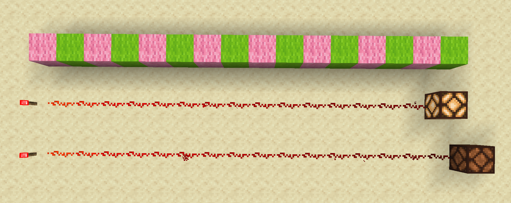

Redstone dust functions similar to electrical wiring in the real world. It transmits signals and pulses in the direction that it is placed. Sometimes, redstone dust is even referred to as redstone wire.
When conducting signals, redstone dust can transmit a full-strength signal up to 15 blocks from the source. The maximum signal strength allowed in-game is 15. If the wire receives a weaker signal, the transmission distance will be shorter. For example, if the input signal is 8, the signal will only travel down 8 blocks of redstone wire before it fizzles out.

A redstone signal can travel 15 blocks before running out of power.
A redstone torch outputs a full-strength signal of power level 15. Up till the 15th wire piece, the signal is still strong enough to power something, as seen by the powered redstone lamp. Many redstone components, such as the lamp depicted, are able to be powered with a signal strength of at least 1.
After 15 blocks in distance, the signal has faded out completely, leaving the lamp unlit.
Redstone dust can be placed on solid blocks (blocks that take up a full cube unit and/or have a solid top surface), regardless of whether said blocks are conductive of redstone signals or not. Dust cannot be placed on any non-solid blocks (e.g. leaves, lower-half slabs, fences, etc.).
Redstone dust can power any conductive blocks that it is either pointing into or placed on top of. Most solid, opaque blocks are conductive of redstone signals, and most transparent or not-full blocks are nonconductive. Redstone wire cannot power blocks that it runs parallel to, even when directly adjacent.
While glass and slabs are not considered conductive blocks, redstone dust can still be placed on top of them, provided there is a full flat surface.

Redstone wire powers the block beneath it, which can then power the redstone lamp, provided that the block is conductive. Glass is not considered conductive.